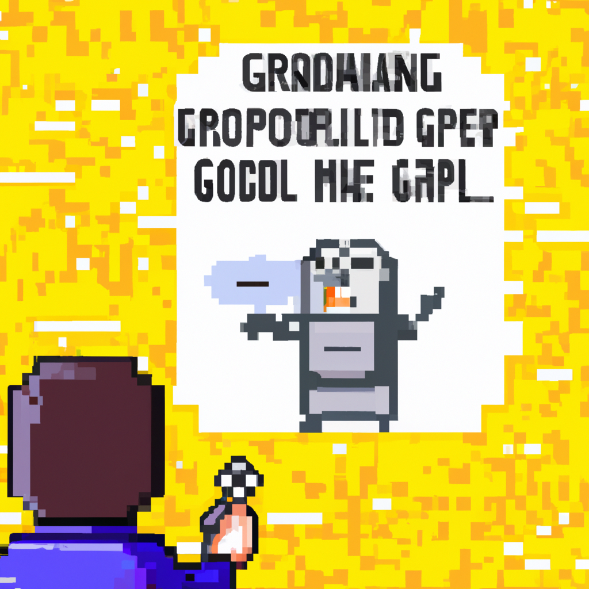

Why AI will not replace the Golang programmer
AI has been making a lot of headlines lately, and it’s no wonder why – it’s transforming the way that we do many tasks and creating opportunities for us to do things faster and more efficiently. But there is one area that has been largely untouched by AI – radiology.
Radiology is a complex field that requires a lot of interpretation and understanding of medical images. AI can help reduce the amount of time radiologists spend looking at images, but it can’t replace them when it comes to making a diagnosis. Radiologists need to understand the anatomy and pathology of the images, something that AI is still far from doing.
AI can also help doctors identify potential problems with the images, but it is still a long way from being able to make an accurate diagnosis. AI can also be used to reduce the amount of time it takes to review an image, but it still requires a trained radiologist to interpret the results.
AI also has its limitations when it comes to understanding the nuances of medical images. AI can’t distinguish between normal and abnormal tissue, which is something that a radiologist needs to do. AI also has difficulty understanding the context of an image – for example, if the image is of a patient with a history of cancer, AI may not be able to identify this and correctly diagnose the patient.
In conclusion, AI will never fully replace the radiologist. Radiologists are highly trained professionals that understand the nuances of medical imaging and are essential in providing accurate diagnoses and treatments. AI can be used to assist radiologists and make their jobs easier, but it won’t be able to replace them anytime soon.